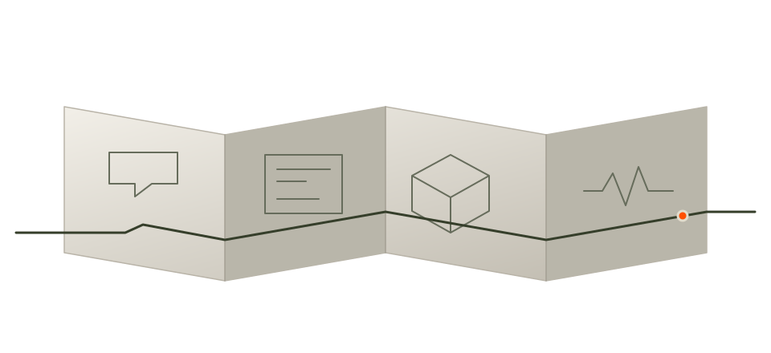

We don’t do half-in.
EPOCH is an AI and software engineering company with teams in the US and India. Every engagement gets our full commitment, from the first call to long after launch.

Why it’s all or nothing
Most software problems aren’t hard because of the technology. They’re hard because someone stopped paying attention halfway through: a requirement that got skipped, an edge case nobody owned, a launch nobody stayed for.
EPOCH exists to be the team that doesn’t stop paying attention. We own outcomes, not tickets, and we stay until the work is done.
What we believe
Serving the client is the whole job.
Technology is how we do it. Your outcome is what we measure ourselves against.
Going further is the default.
When the problem needs more than the plan, the plan changes. Not the standard.
Commitment doesn’t end at handoff.
We stay through launch, adoption and whatever comes after, with maintenance, optimization and new features.
Honesty over comfort.
Honest estimates, early warnings and direct feedback. No surprises.
How an engagement runs
Discovery and analysis
Every project starts with understanding your challenges, goals and constraints. We gather requirements thoroughly before proposing solutions.
Iterative development
We build in short cycles with continuous feedback. Working software arrives early and improves with real usage.
Quality assurance
Automated testing, code reviews and structured QA before anything reaches production.
Ongoing support
Our engagement doesn’t end at launch. Maintenance, optimization and new features keep your systems running well.
Two locations.
One team.
Charlotte, North Carolina.
Ahmedabad, India.